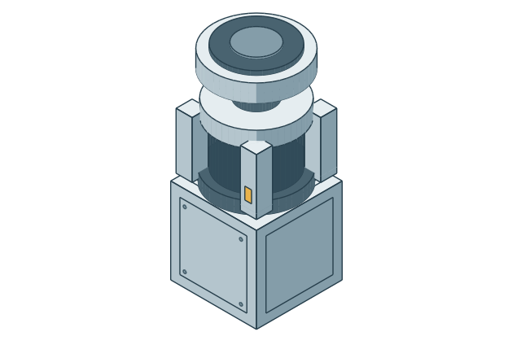
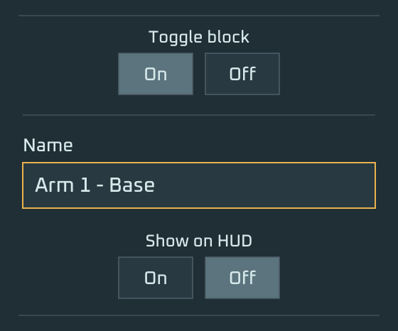
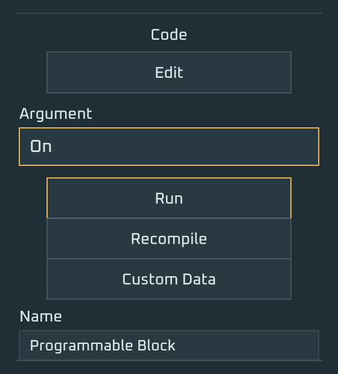

Place your first actuator
Place a rotor on your grid. This first actuator will be the base of your arm.
A hinge or piston can also be the first actuator. This guide uses a rotor.

Name the base
Open the rotor in the terminal and set its name to <MyArmName> - Base.
Replace <MyArmName> with a name for your arm. Use the same name for the head in step 4.
Arm 1 - BaseName the rotor base, rather than its moving rotor head.

Build the rest of the arm on top
Build from the base rotor toward the tool. Intermediate rotors, hinges and pistons can keep their ordinary names.
This example starts with a crossbar, two hinges, two pistons, and a second crossbar. The two branches rejoin at the upper crossbar.
Above the upper crossbar: hinge → rotor → hinge → piston → rotor → hinge → hinge → rotor → drill.

Name the head
Name the tool or final terminal block on the moving end <MyArmName> - Head.
Arm 1 - HeadUse exactly one head marker for this arm. In this example, rename the drill itself.
Place a cockpit or controller
Place a cockpit, control seat or another ship controller on the same construct.
You will sit in it, or take control of it, to send movement inputs to AutoArm.

Place a programmable block
Place a programmable block on the same construct as your arm. This block will run AutoArm.
The example keeps the programmable block and control seat beside the arm on the connected foundation grid.

Load the script and run On
- Open the programmable block’s Edit window.
- Paste the entire AutoArm Arm script and save it.
- Enter
Onin Argument, then press Run.
For a fresh programmable block, AutoArm discovers your arm names from the base markers and generates its configuration.

On.Take control of your arm
Sit in your cockpit or take control of your ship controller. Use WASD and C / Space to move the arm.
By default, movement follows the head’s orientation.